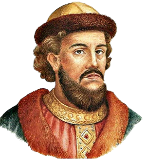

Князь Рюрик
862 год, к которому «Повесть временных лет» относит «призвание норманнского конунга» Рюрика.
Олег Вещий
879 год. Поход на Киев. Объединение Новгорода и Киева. Перенос столицы из Новгорода в Киев.
Игорь Рюрикович
915 год. Мирный договор с печенегами
Ольга Святая
945 год. Восстание древлян. Убийство Игоря
Святослав Игоревич
965 год. Святосла́в И́горевич — князь новгородский и Великий князь Киевский с 945 по 972 год.
Ярополк I Святославич
972 год. Великий князь киевский (972—978 годы), старший сын князя Святослава Игоревича.
Владимир Святославич Святой
978 год. Князь новгородский (969—978), великий князь киевский (978—1015).
Святополк I Владимирович Окаянный
1015 год. Князь туровский (с 988, великий князь киевский в 1015—1016 и 1018—1019.
Ярослав I Владимирович Мудрый
1016 год. Князь ростовский (987—1010),
князь новгородский (1010—1034), великий князь киевский (1016—1018, 1019—1054).
Святополк I Владимирович Окаянный
1018 год. Князь туровский (с 988, великий князь киевский в 1015—1016 и 1018—1019.
Ярослав I Владимирович Мудрый
1019 год. Князь ростовский (987—1010),
князь новгородский (1010—1034), великий князь киевский (1016—1018, 1019—1054).
Изяслав I Ярославич
1054 год. Князь туровский (до 1054),
новгородский князь (1052—1054), великий князь киевский (1054—1068, 1069—1073 и 1077—1078).
Всеслав Брячиславич Полоцкий
1068 год. Князь полоцкий с 1044 года,
единственный представитель полоцкой ветви Рюриковичей на киевском великокняжеском престоле (1068—1069).
Изяслав I Ярославич
1069 год. Князь туровский (до 1054),
новгородский князь (1052—1054), великий князь киевский (1054—1068, 1069—1073 и 1077—1078).
Святослав Ярославич
1073 год. Князь черниговский, с 1073 великий князь киевский. Местночтимый святой (благоверный) Чернигова
Всеволод I Ярославич
1076 год. Князь киевский в 1076—1077
и с 1078 до конца жизни, первый правитель Киева, использовавший титул «князь всея Руси»
Изяслав I Ярославич
1077 год. Князь туровский (до 1054),
новгородский князь (1052—1054), великий князь киевский (1054—1068, 1069—1073 и 1077—1078).
Всеволод I Ярославич
1078 год. Князь киевский в 1076—1077
и с 1078 до конца жизни, первый правитель Киева, использовавший титул «князь всея Руси»
Святополк II Изяславич
1093 год. Князь полоцкий (1069—1071), новгородский (1078—1088),
туровский (1088—1093), великий князь киевский (1093—1113). Сын великого князя киевского Изяслава Ярославича.
Владимир Всеволодович Мономах
1113 год. Князь ростовский (1066—1073), князь смоленский (1073—1078)[2],
черниговский (1078—1094), переяславский (1094—1113), великий князь киевский (1113—1125).
Мстислав Владимирович Великий
1125 год. Великий князь Киевский (1125—1132)
1132 год. Смерть Мстислава. Окончательная утрата единства Руси. Наступила эпоха раздробленности.
1147 год. Первое упоминание в летописях о Москве.
1169 год. Разгром Киева войсками владимиро-суздальского князя Андрея Боголюбского.
1238 год. Монгольское нашествие на Русь
1240 год. Невская битва
1252 год. Александр Ярославич Невский получил Киев и «всю Русскую землю».
1263 год. Дании́л Алекса́ндрович— младший сын Александра Невского,
первый удельный князь Московский (с 1263, фактически с 1277);
родоначальник московской линии Рюриковичей: московских князей, великих князей и царей.
1303 год. Ю́рий (Гео́ргий) Дани́лович (1281 — 21 ноября 1325) — московский князь в 1303—1325,
великий князь Владимирский в 1318—1322, князь Новгородский в 1322—1325.

1325 год. Иван I Данилович Калита.
Князь Московский (1322 или 1325—1340),
великий князь Владимирский (1328—1340), князь Новгородский (1328—1337).
1340 год. Симеон Иванович Гордый.
Князь Московский и великий князь Владимирский с 1340 по 1353, князь Новгородский с 1346 по 1353.
1353 год. Иван II Иванович Красный.
Князь Звенигородский до 1354 года.
Князь Московский и великий князь Владимирский в 1353—1359 годах.
Князь Новгородский в 1355—1359 годах.
1359 год.
Дмитрий Иванович Донской.
Князь Московский (с 1359 года), великий князь Владимирский и князь Новгородский (с 1363 года).
1389 год.
Василий I Дмитриевич.
Великий князь московский и владимирский с 1389 года.
1425 год.
Василий II Тёмный.
Великий князь московский с 1425 года.
1433 год.
Юрий Дмитриевич Звенигородский.
Звенигородский и галицкий князь (с 1389)
1433 год.
Василий II Тёмный.
Великий князь московский с 1425 года.
1433 год.
Юрий Дмитриевич Звенигородский.
Звенигородский и галицкий князь (с 1389)
1434 год.
Василий Юрьевич Косой.
Князь Звенигородский (1421—1448), Великий князь Московский (1434)
1434 год.
Василий II Тёмный.
Великий князь московский с 1425 года.
1445 год.
Дмитрий Юрьевич Шемяка.
Великий князь московский, а также князь Углицкий, князь Галицкий.
1445 год.
Василий II Тёмный.
Великий князь московский с 1425 года.
1447 год.
Дмитрий Юрьевич Шемяка.
Великий князь московский, а также князь Углицкий, князь Галицкий.
1447 год.
Василий II Тёмный.
Великий князь московский с 1425 года.
1462 год.
Иван III Васильевич.
Великий князь московский с 1462 по 1505 год, государь всея Руси.
1505 год.
Василий III Иванович.
Великий князь владимирский и московский в 1505—1533 годах, государь всея Руси.
1533 год.
Иван IV Васильевич.
Государь, великий князь московский и всея Руси с 1533 года.
1575 год.
Симеон Бекбулатович.
В 1575 году Иван lV настоял на именовании Симеона «великим князем всея Руси» (1575—1576).
1576 год.
Иван IV Васильевич.
Государь, великий князь московский и всея Руси с 1533 года.
1584 год.
Фёдор I Иоаннович.
Царь всея Руси и великий князь Московский с 18 (28) марта 1584 года.
1598 год.
Ирина Фёдоровна Годунова.
номинальная правительница на русском престоле после смерти Фёдора І Иоанновича
и до избрания царём Бориса Годунова с 16 января по 21 февраля 1598 года.
1598 год.
Борис Фёдорович Годунов.
В 1587—1598 фактический правитель государства,
с 17 (27) февраля 1598 года по 13 (23) апреля 1605 года — первый русский царь из династии Годуновых.
1605 год.
Фёдор II Борисович Годунов.
Второй русский царь из рода Годуновых (с 13 (23) апреля по 1 (11) июня 1605 года).
1605 год.
Лжедмитрий I Григорий Отрепьев.
По наиболее распространённой версии,
именно Григорий Отрепьев впоследствии выдавал себя
за царевича Дмитрия и взошёл на русский престол под именем Дмитрия I.
1606 год.
Василий Иванович Шуйский.
Русский царь c 1606 по 1610 год (Васи́лий IV Иоа́ннович).
Последний царь из рода Рюриковичей .
1610 год.
Василий IV Иоаннович свергнут с престола.
Образовано временное правительство – «Семибоярщина».
1611 год.
Начало организации второго ополчения Мининым и Пожарским.
1612 год.
Освобождение Москвы от польских интервентов войсками народного ополчения.
Романовы.
1613 год.
Михаил Фёдорович Романов.
Первый русский царь из династии Романовых. Правил с 27 марта (6 апреля) 1613 года.
1645 год.
Алексей Михайлович Тишайший.
Второй русский царь из династии Романовых (14 (24) июля 1645 — 29 января (8 февраля) 1676).
1676 год.
Фёдор III Алексеевич.
Государь, Царь и Великий Князь всея Руси с 1676 года.
1682 год.
Иван V Алексеевич.
Русский царь в 1682—1696 годах из династии Романовых.
1696 год.
Пётр I Алексеевич Великий.
Последний царь всея Руси (с 1682 года) и первый Император Всероссийский (с 1721 года).
1725 год.
Екатерина I.
Императрица всероссийская с 1721 года (как супруга царствующего императора).
1727 год.
Пётр II.
Малолетний император всероссийский, сменивший на престоле Екатерину I.
1730 год.
Анна Иоанновна.
В 1730—1740 годах — императрица Всероссийская из династии Романовых.
1740 год.
Иван VI.
Император всероссийский из Брауншвейгской ветви династии Романовых.
Царствовал с октября 1740 по ноябрь 1741 года, во время Эпохи дворцовых переворотов.
1741 год.
Елизавета I Петровна.
Императрица Всероссийская из династии Романовых с 25 ноября
(6 декабря) 1741 года по 25 декабря 1761 (5 января 1762).
1761 год.
Пётр III.
Император всероссийский в 1762.
1762 год.
Екатерина II Алексеевна Великая.
Императрица и Самодержица Всероссийская (1762—1796).
1796 год.
Павел I.
Император Всероссийский с 6 (17) ноября 1796 года.
1801 год.
Александр I Павлович.
Император и Самодержец Всероссийский (с 12 (24) марта 1801 года).
1825 год.
Николай I Павлович.
Император Всероссийский с 19 ноября (1 декабря) 1825 по 18 февраля (2 марта) 1855.
1855 год.
Александр II Николаевич.
Император Всероссийский,
Царь Польский и Великий князь Финляндский (1855—1881)
из династии Романовых, проводивший широкомасштабные реформы.
1881 год.
Александр III.
Император Всероссийский,
царь Польский и великий князь Финляндский с 1 [13] марта 1881 года.
1894 год.
Николай II.
Император Всероссийский, царь Польский и
великий князь Финляндский (20 октября [1 ноября] 1894 — 2 [15] марта 1917).
1917 год.
Февральская революция.
1917 год.
Михаил Александрович.
Отречение императора Николая II от престола в пользу великого князя Михаила Александровича.